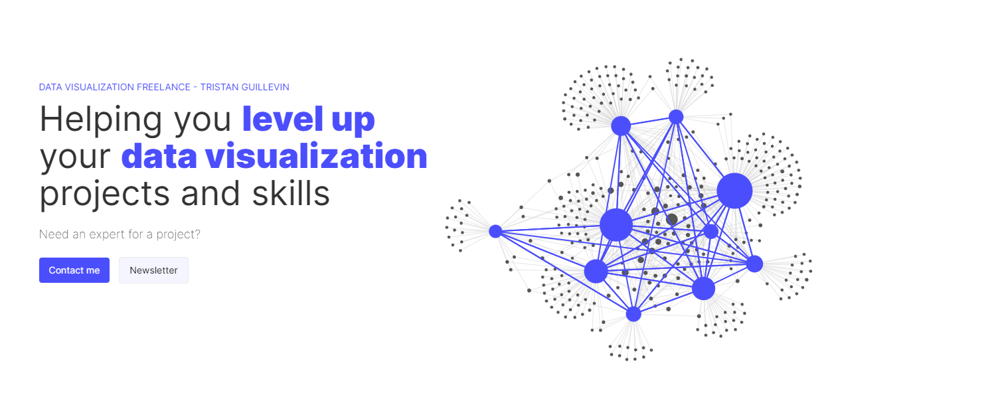
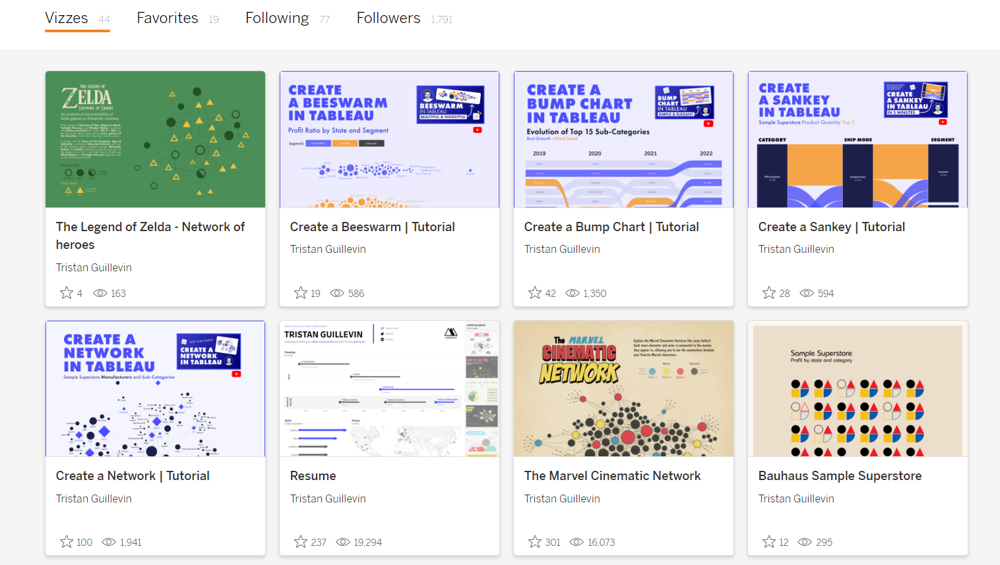
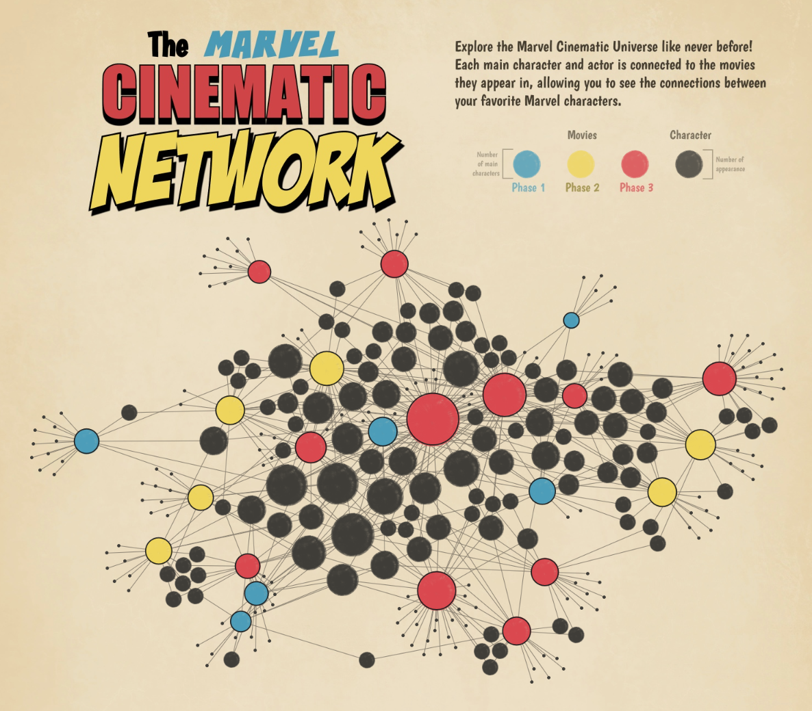
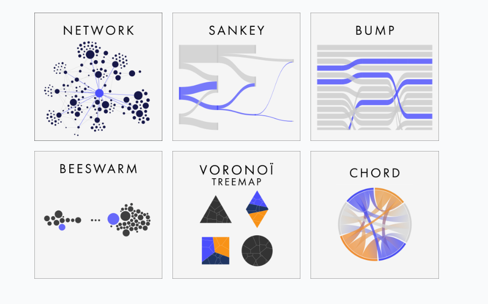
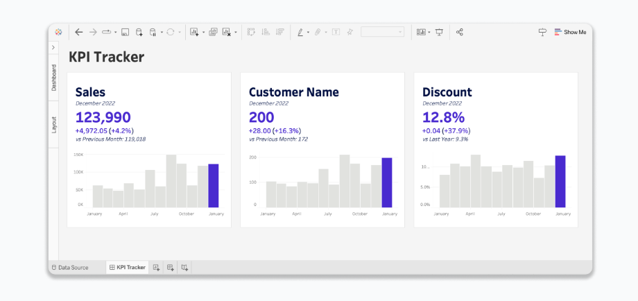
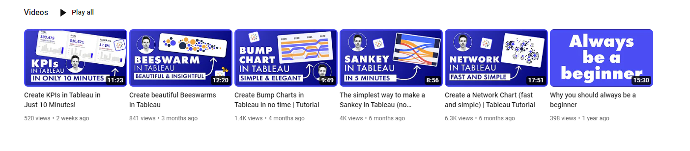

Data Tools For The Community With Tristan Guillevin
Hi all,
The start to September brings with it another opportunity to share a guest blog. Someone that really needs no introduction in the data visualisation and technology space! I hope individuals enjoy reading a great conversation I had with Tristan Guillevin (@Ladataviz)
Tristan is a Tableau ambassador, visionary and Iron Viz winner. He's since expanded his career to wider data design, and it was my absolute pleasure to get to chat all things data tools and see what exciting projects he's been working on.

CJ: Hey Tristan, great to have you be a part of the blog. The content you have been putting out is phenomenal and has really captivated the data visualization community as of late. I’d like to start a little bit with your background. You did various consultancy roles before diving into becoming a freelancer. What prompted the move?T: Hey CJ, thanks for giving me some space on your blog and for the kind words about my content! Before starting as an independent, I worked with two companies in two very different roles. For the first two years and a half, I was an analytics consultant for a Tableau partner. I worked with around thirty clients around the world. That taught me a lot about the job and the different tools, but ultimately the job was a bit repetitive, and I wanted to make a bigger difference.That’s why I joined a start-up as a data visualization specialist. I worked on an embedded project as part of a team. I could take the time to focus on one big project, and I learned a lot of skills that were complementary to Tableau, like design in Figma or programming with Javascript. The switch to freelancer happened slowly. Everyone was stuck at home because of COVID, and my company accepted to change my position to part-time so I could work two days a week as a freelancer. I did that for six months, and then I became a full-time freelancer. It was a perfect transition for everyone. Nowadays, I consider myself less and less a freelancer since I created a company and will no longer work alone from September!CJ: I think many individuals in the community will have first come across your Tableau Public profile, especially after winning IronViz back in 2017. Since then it looks like your toolkit has expanded massively. Was that driven by ‘right tool for the job’, personal interests or client requirements?

T: There were (and still are) multiple drivers. I think one of the most important ones is that I like to learn and challenge myself. With every new project, even when it’s just a Tableau Public visualization, I like to learn a new technique or way to create something. It makes it more fun and more interesting.Working for my clients, I like to have a horizontal approach to my toolkit. Instead of learning multiple BI tools (Tableau, PowerBI, Qlick, etc..) I prefer to have a versatile toolkit. Depending on the task (design, web development, dashboarding), I can select the right tool for the job (Figma, Svelte, Tableau). So it’s both driven by the fact that I like to discover new tools and a strategic approach to be a better consultant. CJ: A considerable amount of your public facing work is advanced chart types. What is it about advanced technical charts that you enjoy?T: 95% of the work for my clients is simple bar charts, line charts, and BANs. When I have the time to work on public personnel projects, I like to try something different and learn how to use and build a new chart type.I don’t enjoy advanced charts more than simple ones! They are different, sometimes better, sometimes worst, but always different from my client-facing work.CJ: I had the pleasure of watching you present at a Tableau London event a few months ago, showcasing your network diagram. You’ve made a complex chart available essentially at the click of the button. Why is making tools for the community important to you? Have there been any visuals from the community that have used your tools that you particularly like?

T: It is an intersection of multiple things. First, creating is the best way to learn. Second, the Tableau community has set an example when it comes to sharing content. It is why I’m still using the tool after eight years! People are helping each other all the time. I wanted to contribute too. Lastly, as an independent, I need to stay visible and relevant to find new clients and be able to help them the best I can. Building tools for the community is a perfect way to combine everything.I honestly cannot pick a single visualization that I liked more than the rest. A few of them have been awarded Viz of the Day. This truly makes me happy. It means people are seeking out new ways to represent data and being successful in doing so. Sometimes it does not follow the “best practices”, but that’s ok! What is important is to experiment and have fun!CJ: What resources would you steer community members towards that would like to learn more web based tools such as website designs, portfolio renderings and chart interactivity seen in your marvel visual?T: Svelte and Webflow are the tools that redefined what I could do on the web. Svelte is popular in the data visualization community, and it makes development fun again. I never enjoyed web development before using Svelte. For dataviz, it’s much simpler than pure D3 and more intuitive than React. Webflow, on the other hand, is a web-based tool that I use mainly to design my websites. Writing CSS was always a bit of a nightmare for me, and with Webflow, I can modify CSS properties visually and then export the code. It makes the process much more enjoyable as I can see the impact of all changes, and I don’t have to remember all the CSS properties. CJ: The number of tools you have made available for free is incredible. When I first joined the community, I remember playing with the Voronoi treemap to start. Since then it’s grown to 6 tools. What are some of the technical elements that go into creating these templates?

My very first “tool’ was the Voronoï Treemap, and it was hosted on Observable. There were a lot of drawbacks and manual work. The tool was generating the data, but you still had to build the viz in Tableau. Right now, everything is automatized, and you get the visualization directly in a Tableau Workbook. The user experience greatly improved, but the core idea remains the same. All generators rely on the same principle. I’m using D3, a javascript library, to calculate positions (or paths) to build the charts on the web using SVGs. Once you have a result in SVG, it’s relatively easy to convert it into polygons with X and Y coordinates, something that Tableau can understand and plot. That is roughly was the tool does in the background. Everything else is just about the UI/UX to make the experience smooth and secure for users. For example, when you download the result, the generated data is now automatically packaged in a template workbook. You directly get a visualization instead of just raw data. It’s all about reducing friction and making the tools easy to use. CJ: You recently released a new tool to generate KPIs in Tableau. Why did you decide to create a new tool instead of more advanced charts? Are you planning to build other tools?

T: It all started because I was tired of building KPIs in Tableau manually. My day-to-day work with my clients consists mainly of building business dashboards. Tracking KPIs with Big Aggregated Numbers is often essential. Anyone who has ever built a KPI dashboard knows how annoying it is to do it in Tableau. You need a lot of calculated fields and, if you want it to look nice, a lot of tedious formatting. All those actions could be automated as they always follow the same pattern. This new tool, BANg (Big Aggregated Number generator), does just that. The tool generates all the calculations, the worksheets, and a nice dashboard directly in a Tableau workbook. It helps me save hours of work every time I need to build a KPI dashboard.I thought the tool could be useful to many people, so I worked hard on making it more robust and secure, and I released it as a product! It’s a great feeling when people trust you, purchase your tool, and find it useful. I really want to continue on that path. Before the end of the year, I’ll release a new tool to simplify building any dashboard in Tableau! I can’t wait to share more in the next months!CJ: You’ve recently moved towards doing more Youtube video tutorials to help users better use your available tools. What can we expect next for your channel?

T: I’ve always enjoyed video recording and editing. I was doing anime AMV in high school and later worked on different video productions at my university. I don’t know why I waited so long to start publishing videos as I always liked this medium! Currently, I’m making tutorials on how to use my tools. Those are useful videos both to better explain how the tools work and also for me to be more confident and learn to make better videos. Eventually, I want to explore different formats but I don’t yet have a clear plan for what’s next.CJ: Have you seen a change in the type of work that you are requested by a client? You are obviously someone who has been very committed to learning all types of new skills. What do you think will be the most important in years to come?T: As I divide my time between working for my existing clients, building tools, and creating content, it’s difficult to accept new work. I still provide mostly pure Tableau expertise to my recurring clients, but I do receive more and more inquiries related to developing solutions.For the years to come, I think the main game changer is AI. Building products is getting easier and easier, and pure technical skills will not be enough to be successful. I will personally focus on two things: learning how to use AI to build products more efficiently and providing high-quality content to build an audience. Building well-made products for a reachable audience that needs them sounds like a good plan!CJ: Thank you Tristan, I appreciate you taking the time to chat. Where can individuals reach out to you to continue the conversation?In a lot of places! Here’s my link tree where people can easily find me and decide how they want to reach out or keep up with my work. Thank you, CJ for giving me some space on your website! See you soon at a Tableau event!CJ Round-Up: The stand out things for me is that self belief to go from employee too freelancer to starting your own business. What an incredible feat. I want to wish Tristan the best of luck with his new company. Rest assured it is already on a path for success and I know how much the BANg & other generators Tristan has created have impacted our community.
LOGGING OFF,CJ